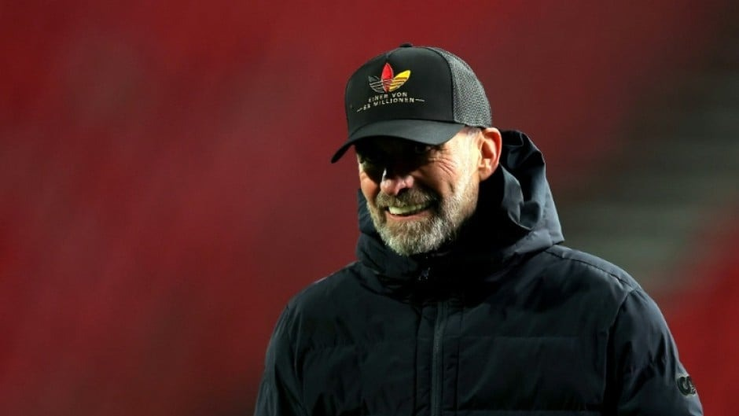

Germany coach Jürgen Klopp has called for a change of leadership at FIFA, criticising president Gianni Infantino in Berlin on Sunday, a day before Germany face the Netherlands in the UEFA Nations League.

Klopp said he had not thought things could get worse after Sepp Blatter, but that someone had managed to do just that. Blatter left the FIFA presidency in 2015 amid corruption allegations. He was later cleared in two trials, but was banned from football by FIFA’s ethics committee.
Speaking about Infantino, Klopp said “surely the next person to come along can do a better job”. He added that there are people who truly care about the future of football and are not driven by financial interests, and that the game needs leaders who put football ahead of money.
Pressure on Infantino
Infantino has been criticised for a series of decisions and proposals. They include a plan to sell off part of the commercial rights to the World Cup, and the creation of a FIFA “Peace Prize” for US President Donald Trump.
The election
FIFA will elect its president at its Congress in Rabat, Morocco, on 18 March 2027. Infantino, who has led the organisation since 2016, is seeking a fourth term.
Former Tottenham defender Ramon Vega and Japan FA honorary president Kozo Tashima have both said they will stand against him. Each needs nominations from at least five FIFA member associations. The deadline for candidacies is Wednesday 18 November.